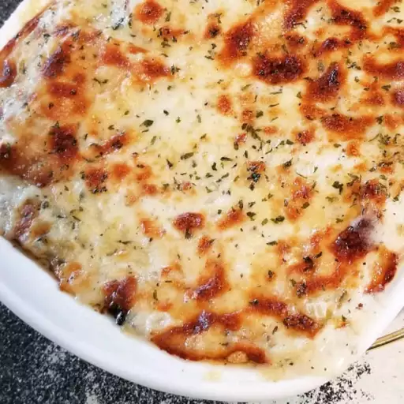

White Cheese Chicken Lasagna

Description
Chicken lasagna with spinach and a creamy white cheese sauce. Great for any kind of potluck. My kids love it!
Ingredients
- 9 lasagna noodles
- ½ cup butter
- 1 onion, chopped
- 1 clove garlic, minced
- ½ cup all-purpose flour
- 2 cups chicken broth
- 1 ½ cups milk
- 1 teaspoon salt
- 4 cups shredded mozzarella cheese, divided
- 1 cup grated Parmesan cheese, divided
- 1 teaspoon dried basil
- 1 teaspoon dried oregano
- ½ teaspoon ground black pepper
- 2 cups ricotta cheese
- 2 cups cubed, cooked chicken meat
- 2 (10 ounce) packages frozen chopped spinach, thawed and drained
- 1 tablespoon chopped fresh parsley
Steps
- Boil and drain the lasagna noodles.
- Cook the onion and garlic in butter, then whisk in the flour. Add the broth, milk, and salt.
- Add some of the mozzarella and Parmesan. Season with basil, oregano, and pepper. Set aside.
- Assemble the lasagna according to the recipe.
- Bake in the preheated oven.